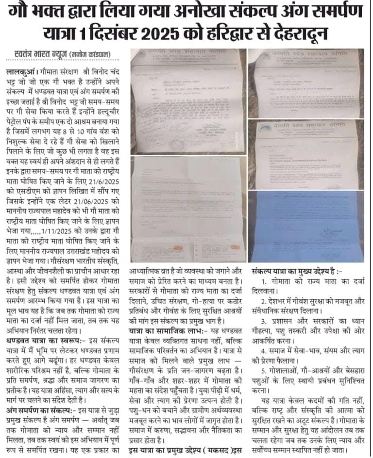

उन्नति स्वयं सहायता समिति
गौ सेवा • मानव सेवा • पर्यावरण संरक्षण • सामाजिक जागरूकता • युवा सशक्तिकरण
गौ सेवा • मानव सेवा • पर्यावरण संरक्षण • सामाजिक जागरूकता • युवा सशक्तिकरण
गौ सेवा • मानव सेवा • पर्यावरण संरक्षण • सामाजिक जागरूकता • युवा सशक्तिकरण
उन्नति स्वयं सहायता समिति कई वर्षों से गौ माता को राष्ट्र माता का दर्जा दिलाने, गौ संरक्षण, पर्यावरण संरक्षण, मानव सेवा एवं सामाजिक जागरूकता के क्षेत्र में कार्यरत है।

संस्था के सामाजिक कार्यों में सहयोग हेतु QR Code स्कैन करें।
गौ सेवा • मानव सेवा • पर्यावरण संरक्षण • सामाजिक जागरूकता • युवा सशक्तिकरण
उन्नति स्वयं सहायता समिति एक सामाजिक, स्वयंसेवी एवं जनहितकारी संस्था है जो गौ संरक्षण, पर्यावरण संरक्षण, मानव सेवा, पशु सेवा, शिक्षा जागरूकता एवं युवा सशक्तिकरण के क्षेत्र में कार्यरत है।
संस्था कई वर्षों से गौ माता को राष्ट्र माता का दर्जा दिलाने हेतु अभियान, पदयात्रा, दण्डवत यात्रा, अनशन एवं सामाजिक जागरण कार्यक्रम चला रही है।
गौ माता संरक्षण, राष्ट्र जागरण एवं सामाजिक सेवा हेतु वर्षों से चल रहे जनआंदोलनों की झलक
उन्नति स्वयं सहायता समिति की स्थापना सामाजिक जागरूकता, गौ सेवा एवं मानव सेवा के उद्देश्य से की गई।
गौ माता को राष्ट्र माता का दर्जा दिलाने हेतु व्यापक जनजागरण अभियान प्रारम्भ।
विभिन्न राज्यों में गौ संरक्षण एवं सामाजिक जागरण हेतु यात्राएं।
सतीश विनोद भट्ट द्वारा गौ माता को राष्ट्र माता घोषित करने हेतु दण्डवत यात्रा।
उन्नति स्वयं सहायता समिति का संकल्प है कि गौ माता को राष्ट्र माता का संवैधानिक दर्जा मिले। संस्था वर्षों से दण्डवत यात्रा, पदयात्रा, जनजागरण अभियान, ज्ञापन, उपवास एवं सामाजिक आंदोलनों के माध्यम से इस अभियान को आगे बढ़ा रही है।


उन्नति स्वयं सहायता समिति का मुख्य उद्देश्य गौ माता संरक्षण, पर्यावरण संरक्षण, मानव सेवा, पशु सेवा, सामाजिक जागरूकता, युवा सशक्तिकरण एवं राष्ट्र निर्माण है।
संस्था के संस्थापक एवं समाजसेवी श्री विनोद चन्द्र भट्ट द्वारा गौ माता को राष्ट्र माता घोषित करने हेतु अनेक वर्षों से जनजागरण अभियान, दण्डवत यात्रा, पैदल यात्रा, उपवास एवं सामाजिक आंदोलनों का संचालन किया जा रहा है।
गौ माता राष्ट्र माता अभियान की यात्रा, जनजागरण, अनशन एवं सामाजिक गतिविधियाँ
Firebase आधारित Volunteer Registration, Certificate Verification, ID Verification एवं Database System